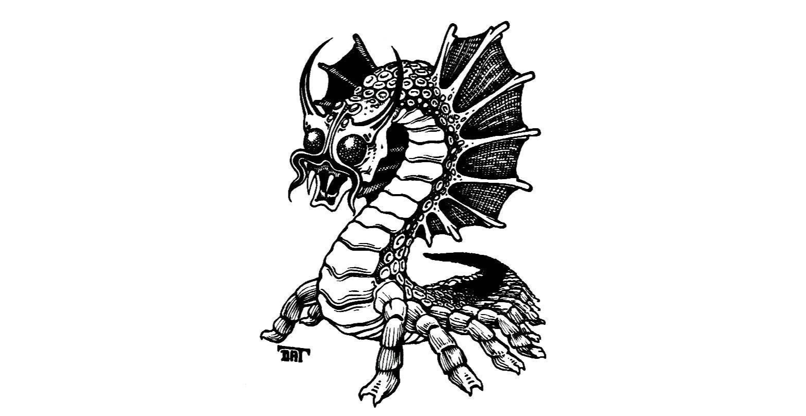

Rising in the distance are jagged mountains that begin at the rock formations. The biting wind seems to hold its breath for a fleeting moment, leaving the frigid air unnaturally clear. Sunlight, thin and pale, glints off the endless snowfields.
Suddenly, a sound rips through the stillness— a distant cry, chilling and sharp— the yip of a wolf, twisting into a shriek of raw agony. Then, as abruptly as it began, it ceases. Gerhard and Scarlet, their senses honed by the wilderness, exchange a wary glance.
Far across the pristine expanse, a flicker of white catches the eye. A large wolf, its fur blending seamlessly with the snow, streaks across the landscape, glancing desperately behind it. A sudden cloud of steam erupts from the snow— a phantom geyser— and the wolf, engulfed, vanishes. Its pained yelp echoes once more, then is swallowed by the silence.
Elara, ever quick to react, instinctively draws upon the subtle, earthy magic she learned during her time among the druids. A faint, almost imperceptible shimmer, like a fleeting forest whisper, settles upon Doctor Pepe, imbuing him with a quiet moment of clarity. She then melts into the shadows of a nearby outcropping, her lithe form disappearing against the gray stone.
Scarlet, her own connection to the natural world immediate, releases Sparky to scout. The owl, a golden dart against the pale sky, spirals upward. Through Sparky’s keen eyes, Scarlet sees the steaming rupture in the snow— a localized column, a small cylinder of superheated vapor, rising perhaps ten feet high, with something disturbingly blue shimmering within its heart. The earth where the wolf had been is scalded and bare.
Kragor, his massive conjured war hammer already clutched in his frost-rimed gloves, takes a position alongside Elara, his glowing eyes fixed on the boiling cloud. He readies some of his eldritch power, raw and untamed, preparing to blast whatever horror emerges. Similarly, Doctor Pepe, moving with the preternatural swiftness of a seasoned rogue, finds a hollow in the terrain and vanishes, becoming one with the contours of the frozen earth. He loads his crossbow and is ready to fire at the first sign of danger.
Just as he begins to feel settled, Doctor Pepe registers a flicker. Whisper is but a fleeting impression of tawny fur and controlled power. Her inherent tabaxi agility, honed by years of monastic discipline and fueled by ki, allows her to cover the ground with impossible speed as she darts to the sheltering embrace of another craggy outcropping. She presses herself against its cold stone, her lithe body blending into the jagged lines, becoming almost invisible to the untrained eye.
Halite, a towering force of muscle and granite, rushes forward, his massive bronze shield held ready. He plants himself on the other side of Whisper’s outcropping, his trident gleaming.
Meanwhile, the cloud of steam they’ve been watching begins to dissipate, thinning into mere wisps that dance on the wind. Just as the last tendrils of steam vanish, a sudden shout rips from Gerhard’s lips. His eyes, fixed on the unfolding horror, widen with dawning recognition. “Remorhaz!” he bellows, his voice raw with ancient dread. The name, heavy with arctic menace, carries across the plains to Whisper, Elara, and Kragor, a stark warning of the monstrous threat. Scarlet, too, recognizes the terrifying implication of Gerhard’s cry: an aggressive predator that devours any animal matter, including humanoids (they have even been known to attack frost giants), with a furnace burning inside— a creature of ice and fire, a living engine of destructive heat.
Elara, with a flash of inspired cunning, brings her hand drum to bear, focusing her bardic magic into its taut skin. A low, rhythmic thumping sound, deep and resonant like the ponderous, ground-shaking steps of some immense, warm-blooded beast struggling through deep snow, manifests ten feet beyond Halite’s position. It is an illusory lure, a sonic beacon designed to draw the creature’s fury.
Whisper, with an almost imperceptible shift, stows her snowshoes. Then, with the fluid grace of a creature born to defy gravity, she begins to climb the rough face of the outcropping, finding purchase ten feet above the snow.
Suddenly, a tremor shakes the ground. The snow around Elara’s illusory thumper erupts, showering the air with crystalline fragments. From the earth, immense and terrible, rises the remorhaz. Its segmented body, a nightmare of chitinous plates, glistens with superheated ice, steam roiling from its carapace. A wave of oppressive heat washes over Halite, the air burning. The tip of his nose, caught in the sudden thermal blast, turns an alarming red.

From his hidden vantage, Doctor Pepe’s crossbow twangs. The bolt streaks across the snow, finds its mark, and pierces the remorhaz’s armored hide. The bolt sinks more than halfway into the creature’s flesh before it ignites and burns away to nothing— consumed by the beast’s internal furnace.
Then Kragor’s moment arrives. With a snarl of raw power, he unleashes a crackling beam of dark, purple-red energy ripping through the air. It tears a smoking wound into the remorhaz’s armored side. The colossal worm, its primal fury ignited by these affronts, lets out a deafening shriek of rage, its many legs churning the snow.
Halite, recognizing the creature’s unbridled wrath, makes a tactical retreat, moving twenty-five feet back, placing himself closer to Elara. With a powerful grunt, he hurls his javelin. The weapon spins through the air, impales the remorhaz, and bites deep. But like Doctor Pepe’s bolt, the javelin is swiftly consumed by the creature’s inner fire, incinerating on contact. Still, the blow tells; the remorhaz’s furious charge falters.
Gerhard, his eyes keen despite the danger, yells, “Mors certa!” and a faint, glowing sigil appears upon its segmented hide. His longbow twangs, and an arrow, guided by his mark, flies true, striking the base of one of the remorhaz’s many antennae. Elara, her shortbow singing its own song of defiance, fires an arrow that finds purchase between chitinous plates. The bloodied remorhaz’s fury becomes desperation as it starts to regret its choice of prey.
With a quick glance towards Scarlet, Elara beats her drum, a pulse of inspiration flowing into the druid, urging her to action. Scarlet, empowered, thrusts her hands forward. Vines, thick and green, burst from the ground, lashing out at the remorhaz, briefly coiling around its immense form. But the creature’s infernal heat is too great; the nascent flora sizzles, blackens, and burns away in an instant.
The party continues the onslaught. Kragor, seeing the beast’s injuries, doubles down on his assault. He extends a hand towards the colossal worm, and a dark pallor settles over its carapace. Then, with a grunt of exertion, he unleashes another blast of fuchsia energy, delivering a crash of searing pain into the remorhaz. Doctor Pepe, from his hidden vantage, fires again. His crossbow bolt finds its mark, sinking deep into the creature’s flesh, causing it to emit a strange, blood-curdling screech of agony. He slips back into concealment, a shadow among shadows. Whisper, a blur of motion, pops out from her perch. Her sling whirls, a stone singing through the air, hitting the remorhaz with a sharp crack before she melts back into hiding.
The remorhaz, heavily wounded and frenzied, shifts its terrible focus. It rushes toward Halite, its massive, heat-shimmering maw opening in a bid to snap off the goliath’s head. But through its haste and pain, it misjudges Halite’s height. The fiery bite snaps shut on empty air. Halite, momentarily distracted by the oppressive heat radiating from the creature, swings his trident, but his aim is off; the attack misses. With a guttural roar, he calls upon his inner reserves of strength, power surging through his muscles. His trident becomes a blur as it strikes again. This time the blow lands with devastating force and accuracy. Halite’s hands, arms, and body scream with the fiery agony of the beast’s heat. The triple-barbed head of the weapon thrusts deep into the remorhaz’s final body segment, all three prongs puncture its head, piercing its brain and eyes. The creature gurgles, a last, dying spasm shaking its colossal frame.
The remorhaz, mighty and terrible, lies dead, its monstrous form cooling into a massive, steaming corpse on the frigid plains. The adventurers cheer Halite’s killing blow, while relief that the surprise encounter is finished flows over them like balm.
Examining the carcass, Gerhard and Scarlet now recognize the beast as a juvenile. “Thank the gods this was but a young one, and let us hope the mother is nowhere near!” Gerhard says.
Scarlet approaches the fallen beast, her naturalist’s eye already assessing its unique properties. The halfling notes the thick, iridescent scales, realizing they hold the secret to fire resistance— thrym, a potent protection against the very element that once animated the creature. But extracting the scales is a perilous task. The remorhaz still radiates latent heat, and its glands, even in death, remain volatile. Undeterred, Scarlet sets to work. With precise, careful movements, she manages to remove three of the prime scales. Yet, in her meticulous effort, her hand slips. She nicks a heat gland, and a searing burst of residual fire erupts, searing her upper arm. She hisses at the pain, but holds fast to her prize.
With the immediate threat neutralized, Whisper’s keen eyes scan the surrounding mountains. Her gaze falls upon a promising formation— a deep, winding niche, carved into the sheer stone face. It is high above the snowline, offering a perfect, windless shelter. A natural sanctuary.
The day’s grim victory leaves them with a new sense of the land’s dangers, but also a formidable prize. They have covered a total of seventy-two miles, their path steadily leading them deeper into the icy heart of Foren, a journey fraught with both peril and potential. Exhausted, the party rests well— with one exception. Kragor is again tormented as he is split apart, one body fitfully turning in his bedroll, one body captured deep under ice.
The fourth dawn on Foren broke with a deceptive clarity, yet Kragor’s scouting mage hand proved insufficient to keep the party from hazards. Halite plunged through treacherous snow, vanishing up to his neck. Half the precious day was spent in a desperate excavation, clawing him free from the frozen earth.
Day five dawned under bruised clouds, the wind blustery and disorienting. Whisper, usually a master of navigation, found her keen senses baffled by the featureless expanse. Despite her efforts, their tracks merely circled back upon themselves. True progress felt elusive as the spirit of their journey momentarily lost its way.
The sixth day echoed the fifth, grim and gray. But Elara, a spark of celestial defiance against the encroaching despair, refused to yield. Her hand drum thrummed with a vibrant, defiant rhythm, weaving a spirited marching song into the biting air. An uncanny alchemy occurred; their steps, once leaden, found new purpose, each synchronized movement a part of an impossible, fluid dance across the snow.
Day seven brought an urgent clarity. Doctor Pepe, moving like a phantom, scouted ahead, discerning the most efficient path. Soon, a bright orange ribbon snaked across the landscape— a river of molten lava, the River Inferno, a fiery serpent across the snowy landscape.
As twilight fell, a griffin descended, its sharp beak pecking desperately at a wounded wing. Scarlet, attuned to nature, felt its pain. She used her druidic magic to communicate with the griffin, and learned of the arrow behind the wounded wing. With practiced hands, she removed the projectile and healed the magnificent beast. The griffin offered her a ride in gratitude, and warned her of towering giants to the far north. For the next few days, Scarlet ascended with the friendly mount, scouting from above.
The eighth day was a blur of wind and snow, visibility drastically reduced. Yet, with the griffin as their tireless guide, the party maintained their impressive pace. Before long, the party had covered one hundred and fifty-six miles across Foren.
The ninth day since departing Syrinlya dawns under a bruised, leaden sky. The wind, a constant, sneering companion, claws at their faces, driving needle-fine ice into any exposed skin. Visibility shrinks to a mere dozen feet, the world a suffocating shroud of white where earth and sky blend into an indistinct, endless canvas.
As the gray light begins to wane, the griffin circles once more overhead. It descends with a graceful, unhurried landing beside Scarlet, its keen eyes meeting hers with an ancient understanding. The bond formed between them, forged in gratitude, finds its natural end. The magnificent creature has fulfilled its obligation, the debt of its healing paid in full. With a final, majestic spread of its wings, the griffin launches itself skyward, a silent, feathered arrow against the bleak, fading light. The party watches it go, a collective sigh of farewell breathed into the biting wind. The vast, empty sky reclaims its magnificent child, leaving the adventurers alone once more with the silence and the cold.
The grim ritual of making camp begins. Movements, practiced and efficient, cut through the fading light. Each adventurer scans the unforgiving landscape, their vigilant gaze sweeping for subtle shifts. Halite’s gaze, however, snags on… something. Beyond the relentless swirling snow, a faint, almost otherworldly glimmer catches his eye.
He strides forward, his heavy boots biting into the packed snow. And then he sees it: a massive egg. It stands almost three feet tall, a perfect, gleaming sentinel. A stark monument against the endless white. Its surface, purest white alabaster, impossibly smooth, radiates a subtle cold. A cold that mocks the very air around it.
“What in the frozen hells do you have there, Halite?” Kragor’s voice rumbles.
“An egg,” Halite replies. “And I have a truly abysmal feeling about it. I think we should leave it to whatever unholy parent spawned it.” Halite’s appetite for unpleasant surprises remains thoroughly sated after the remorhaz incident and his subsequent near-burial in the snow pit.
Kragor, whose curiosity is less a trait than a chronic, terminal affliction, lumbers forward. His heavy war hammer lies carelessly abandoned in the snow. He circles the egg, extends a massive hand, poised to prod its impossibly smooth surface. He inhales deeply, apparently attempting to glean its cosmic secrets by means most olfactory. A low grunt escapes his lips.
Then, driven by an impulse born less of instinct and more of outright, unmitigated madness, Kragor licks the unyielding surface of the colossal shell.
A sharp, wet gasp rips from his throat. His tongue, a splash of pink-red against the pristine white, instantly adheres to the frozen shell. A searing pain, like a thousand needles of ice, blossoms across his mouth. He yelps, struggles, a pathetic dance of desperation, to pull free. But the cold binds him, unrelenting. A quick, brutal yank, and his tongue detaches with a sickening, wet tear. Frigid pain lances through him, a stark, undeniable reminder of Foren’s unforgiving, utterly unsympathetic nature.
“Fool,” Whisper hisses, her tail twitching with a barely concealed, exasperated amusement.
Scarlet, her druidic senses a finely-tuned instrument of dread, approaches cautiously. Her eyes, wide as craters, fixate on the pristine shell. An unmistakable aura pulsates from it.
“A white dragon egg,” she breathes, the words a hushed blend of awe and horror. “And it’s… distressingly far along. Close to hatching.” She estimates its gestation, a mere matter of weeks before the scaled terror rips its way into this desolate world.
Kragor, still massaging the raw, violated ruin of his tongue, stares at the colossal object of his self-mutilation. Is this what has been calling me here? Causing my entombed dreams? His glowing eyes soften. A rare vulnerability crosses his harsh features. “It’s an orphan,” he mutters, the words heavy with a strange, almost personal resonance. “Like me. An unwanted, misunderstood bastard left to face the world alone.”
A decision, swift and unyielding as a glacier, hardens in his gaze. He reaches out, not to repeat his oral folly, but to embrace the chilling alabaster. “I shall take it,” he declares, his voice a decree from some forgotten, frozen god. He begins to scrape away the snow around the massive egg, preparing to shoulder its hefty weight.
A ripple of unease washes over the rest of the party. Halite’s brow furrows, a canvas of quiet exasperation. Doctor Pepe eyes the egg with a professional curiosity that warps quickly into naked apprehension; his hand instinctively seeks the comforting, lethal weight of his concealed dagger. Elara’s celestial glow, usually a beacon, seems to dim a shade, a hint of genuine concern clouding her normally bright demeanor.
A white dragon, even a mewling hatchling, is a creature of chaotic danger and volatile unpredictability. To willingly invite such a volatile force into their already desperate, life-threatening quest… it’s a special kind of madness.
But Kragor, his mind set with the immovable stubbornness of a frozen mountain, is beyond dissuasion. He lifts the egg, its chilling weight a grim, impossible promise of the unknown. The others exchange wary, resigned glances. Their journey, already fraught with ancient horrors and elemental dangers, has just gained a new, undeniably chilling companion.
The tenth day on Foren dawns with brutal clarity, sun stripping away the shroud of perpetual fog. Sparky, ever watchful, soars high above, a silent sentinel against the endless white. As the day wanes, Doctor Pepe’s keen eyes snag on a lone figure, a dark mote against the horizon, walking with unnerving precision toward the river of molten earth.
Most of the party melts into the snow, seeking to avoid contact, but Doctor Pepe, drawn by a rogue’s instinct, creeps closer for a better look. Within a hundred feet, the figure veers, its sightless gaze fixed on them. Kragor, sensing potential danger, fingers his war hammer and mutters “Mactē virtutē”. A shield of ice crackles around his body.
The creature halts, not twenty feet from Scarlet. “Where is Lucien?” it rasps, voice like grinding stone. Kragor and Elara close in, a bardic melody empowering Scarlet as she lies, pointing eastward. “Balenpost,” she offers, a fabricated beacon of hope. The thing turns, a singular purpose driving it, and strides away, leaving only silence and the chilling echo of its question.
“What in the name of the six approved gods was that?” queries a stunned Gerhard.
Scarlet shrugs. “Undead. A one-track mind. I’m hoping the thing incinerates itself attempting to cross the River Inferno.” And indeed, the figure of decaying and emaciated flesh marches in a straight line towards Balenpost, and thus towards the river of lava.
With a collective shrug, the party continues until they find a suitable location to set up camp. Having now crossed two hundred four miles into the island, they know they will soon find Salsvault.
The eleventh dawn breaks over Foren, a cruel, indifferent sun struggling to pierce the leaden sky. The wind scours the endless snowfield, carrying with it the fine dust of shattered ice.
Whisper, her keen tabaxi senses always alert, moves with fluid grace beside Elara. Together, their combined navigational instincts— Whisper’s innate connection to the earth, Elara’s celestial guidance— cut a precise path through the featureless expanse. The miles, once agonizingly slow, now fall beneath their snowshoes with a renewed, almost desperate urgency.
Then, Doctor Pepe, ever watchful, stiffens. His eyes, narrowed against the glare, discern subtle disturbances in the shimmering distance. Not a drift, not a mirage, but movement. Three tiny, flickering motes of azure against the infinite white, too deliberate for natural phenomena. Two hundred, perhaps three hundred feet away, they hover and dart like malevolent gnats. Suddenly, recognition dawns. “Ice mephits,” barks Doctor Pepe brusquely.
This must be it. The long, brutal march finds its end, or perhaps its true beginning. The presence of the elemental pests, just as described by Orvo, can only mean one thing: Salsvault.
The space between them and the mephits closes swiftly, each crunch of snow beneath their boots swallowed by the vast silence. Sixty feet separate them when the creatures, like shards of living ice, suddenly surge forward.
Scarlet, her staff already half-raised, acts with the swiftness of a winter storm. “Radices glaciei!” she chants, invoking the ancient power of the frigid earth. From the ground, spectral, icy tendrils erupt, snaking outward with horrifying speed. Two of the mephits, caught in the unexpected tangle, shriek as they are ensnared, their ethereal forms struggling against the binding magic. The third, a blur of malevolent blue, darts free.
Halite charges forward, unstoppable as an avalanche, and closes half the distance to the one mephit that escaped Scarlet’s icy vines. His powerful arm whirls, and a javelin, a dark streak against the snow, flies true. It strikes the mephit with a sickening thunk, biting deep into its crystalline form. The creature, struggling to maintain its erratic flight, wobbles precariously in the air. Doctor Pepe advances, quick as a winter fox, his crossbow already rising. The bolt snaps forward, thwack!, burying itself into the same wounded mephit. The creature shudders, a faint, desperate whine escaping its form, barely audible over the wind. Elara’s shortbow sings its defiance, an arrow arcing through the crisp air. It finds the injured mephit, striking with precision. With a brittle pop and a soft shower of ice shards, the creature explodes, its essence dissipating into the freezing air like a breath on a cold morning.
Whisper, her movements a blur of feline grace, dashes across the snow, ignoring the lingering shivers of the mephit’s demise. She reaches one of the entangled mephits, its struggles futile against Scarlet’s magic, and with a series of impossibly deft movements, binds its ephemeral limbs with a length of rope from her pack. Kragor, his war hammer blazing with radiant energy, curses under his breath as fuchsia energy leaps forth but screams wide of his target, vanishing harmlessly into the infinite white.
Gerhard, however, takes careful aim, and with arcane focus releases an arrow toward the mephit that is not subject to Whisper’s ministrations. It rips through the air and buries itself deep into the creature’s form.
The bound mephit, though restrained, is not yet defeated. It gathers its icy fury, and a blast of frigid air erupts from its spectral maw, slamming into Whisper. Her fur freezes, and frostbite spreads across the skin of her upper arm. The second mephit likewise exhales, and a shroud of dense, swirling fog descends, clinging to the ground and obscuring all sight. The world shrinks to a claustrophobic white.
Halite, a silhouette in the sudden gloom, throws a second javelin. It vanishes into the swirling mist, guided by sheer will and years of honed instinct. A wet thud echoes from the fog, followed by a faint, brittle pop. Then, as abruptly as it appeared, the fog cloud thins, then dissipates entirely, revealing the mephit dissolved into vapor and ice.
Doctor Pepe, his senses unhindered by the fleeting mist, lines up his shot. His crossbow twangs, and the bolt screams forward with unnerving speed. It strikes the remaining, struggling mephit with a sickening thwack! The mephit shivers, a pathetic wail escaping its form. Elara’s follow-up arrow strikes, driving deep into the creature. It sways, its form dimming, barely holding itself together. Whisper attempts to knock out the mephit, launching a flurry of unarmed blows. Her first attack, a precise jab, glances off its form, but her second, fueled by an almost exasperated urgency, connects and inadvertently takes its head off. The body of the mephit wobbles, then with another brittle pop, it explodes, scattering shards of ice that sting Whisper.
The silence that follows is absolute, broken only by the wind’s eternal sigh. The battle is over.
Beyond the scattered ice dust, almost lost in the vast, white expanse, a structure is visible. A building, sloped and ancient, partially swallowed by the snow, its strange architecture hinting at Aeorian origins. But even as they watch, a fresh tremor shakes the ground. The structure, scarred by time and impact, begins to slip further, slowly, inexorably, beneath the surface of the frozen, unyielding earth. The entrance to Salsvault, it seems, is not merely guarded, but actively sinking into the depths.